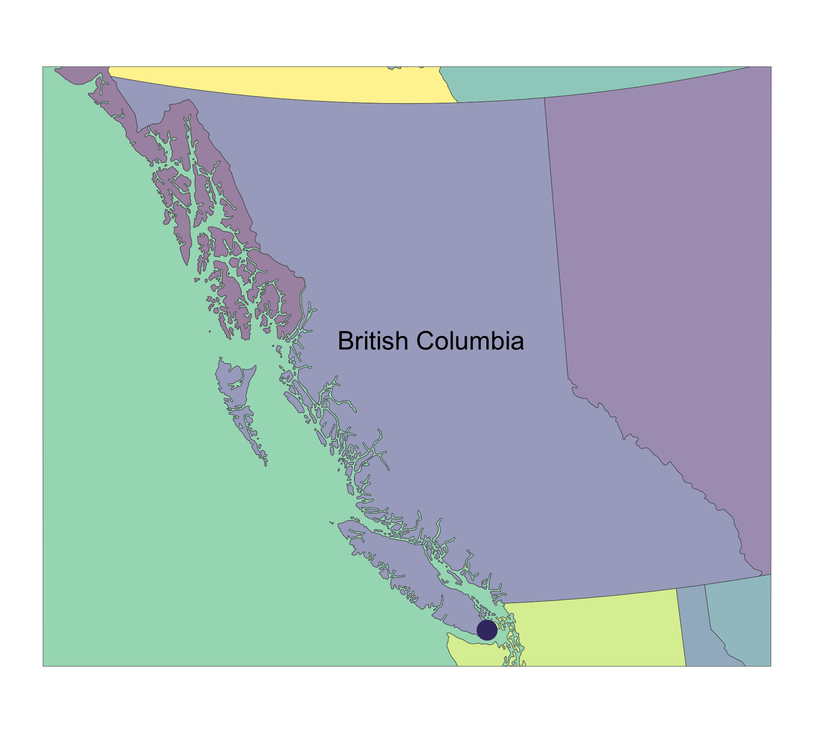
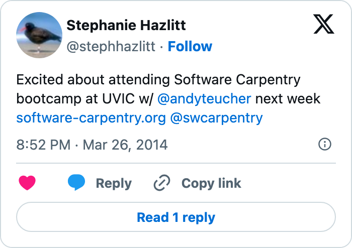

Building Data Science Capacity
A Decade of Progress in the BC Public Service
BC Public Service

Victoria, British Columbia üá®üá¶
Data Skills in the Public Sector
Let’s Ask ChatGPT 3.5:
Steph Hazlitt

From Data to Communication
From Data to Communication
There Has To Be A Better Way

The Beginning: 10 Years Ago
Steph’s New Focus
Reproducible & Auditable Data Workflows in R

The Journey: Use of R in the BC Public Service
1) Encourage Early Adopters
Individuals or groups within an organization who enthusiastically embraces new ideas, technologies, or practices before they become widely accepted or mainstream. Early adopters drive innovation by being willing to experiment with new ideas and technologies. Their openness to change can lead to the discovery of better processes, products, or services. (ChatGPT3.5)
2) Help Solve a Problem
I have focused a lot of my energy on the “getting the data” problem.
bcmaps üì¶
bcmaps üì¶
bcmaps üì¶
bcmaps::available_layers()
# A tibble: 37 × 6
layer_name title record resource using_shortcuts local
* <chr> <chr> <chr> <chr> <lgl> <lgl>
1 airzones British Colu… e8eee… c495d08… TRUE FALSE
2 bc_bound BC Boundary b9bd9… f591698… FALSE FALSE
3 bc_bound_hres High Resolut… 30aeb… 3d72cf3… FALSE FALSE
4 bc_cities BC Major Cit… b678c… 443dd85… TRUE FALSE
5 bc_neighbours Boundary of … b9bd9… f591698… FALSE FALSE
6 bec British Colu… f358a… 3ec24cb… TRUE FALSE
7 cded_raster Get Canadian… <NA> <NA> FALSE FALSE
8 cded_stars Get Canadian… <NA> <NA> FALSE FALSE
9 census_dissemination_area Current Cens… a091f… a7fa66d… TRUE FALSE
10 census_division Current Cens… ef179… 36b530c… TRUE FALSE
# ℹ 27 more rows
------------------------
All layers are downloaded from the internet and cached
on your hard drive at /Users/shazlitt/Library/Caches/org.R-project.R/R/bcmaps.Now I Want All the Data
BC Data Catalogue: https://catalogue.data.gov.bc.ca
Rule of Three
bcdata üì¶
Airports Metadata
bcdata üì¶
bcdata::bcdc_get_data(record = "bc-airports",
resource = "fcccba36-b528-4731-8978-940b3cc04f69")
# A tibble: 24 × 3
DESCRIPTION aerodrome `Transport Canada registered airports`
<chr> <chr> <chr>
1 <NA> airport Transport Canada certified airports
2 <NA> airstrip Cleared landing space with no associated…
3 <NA> helipad Landing area or platform for helicopters
4 <NA> heliport A small airport suitable only for use by…
5 <NA> hospital heliport Any helipad located at a hospital
6 <NA> seaplane anchorage An area in which seaplanes may can anchor
7 <NA> water aerodrome Any water surface intended to be used fo…
8 <NA> <NA> <NA>
9 AERODROME_STATUS certified Airports operated and maintained in acco…
10 <NA> registered Aerodromes not subject to ongoing inspec…
# ℹ 14 more rowsbcdata üì¶
bcdata::bcdc_query_geodata(record = "bc-airports")
Querying 'bc-airports' record
• Using collect() on this object will return 455 features and 41 fields
• At most six rows of the record are printed here
────────────────────────────────────────────────────────────────────────────────
Simple feature collection with 6 features and 41 fields
Geometry type: POINT
Dimension: XY
Bounding box: xmin: 833323.9 ymin: 381604.1 xmax: 1198292 ymax: 1054950
Projected CRS: NAD83 / BC Albers
# A tibble: 6 × 42
id CUSTODIAN_ORG_DESCRI…¹ BUSINESS_CATEGORY_CL…² BUSINESS_CATEGORY_DE…³
<chr> <chr> <chr> <chr>
1 WHSE_IMA… "Ministry of Forest, … airTransportation Air Transportation
2 WHSE_IMA… "Ministry of Forest, … airTransportation Air Transportation
3 WHSE_IMA… "Ministry of Forest, … airTransportation Air Transportation
4 WHSE_IMA… "Ministry of Forest, … airTransportation Air Transportation
5 WHSE_IMA… "Ministry of Forest, … airTransportation Air Transportation
6 WHSE_IMA… "Ministry of Forest, … airTransportation Air Transportation
# ℹ abbreviated names: ¹​CUSTODIAN_ORG_DESCRIPTION, ²​BUSINESS_CATEGORY_CLASS,
# ³​BUSINESS_CATEGORY_DESCRIPTION
# ℹ 38 more variables: OCCUPANT_TYPE_DESCRIPTION <chr>, SOURCE_DATA_ID <chr>,
# SUPPLIED_SOURCE_ID_IND <chr>, AIRPORT_NAME <chr>, DESCRIPTION <chr>,
# PHYSICAL_ADDRESS <chr>, ALIAS_ADDRESS <chr>, STREET_ADDRESS <chr>,
# POSTAL_CODE <chr>, LOCALITY <chr>, CONTACT_PHONE <chr>,
# CONTACT_EMAIL <chr>, CONTACT_FAX <chr>, WEBSITE_URL <chr>, ‚Ķbcdata üì¶

bcdata üì¶ for Python
3) Build Community

Support a Culture of Learning
- Tutorials
- Hackathons
- Workshops
4) Modernizing Tools: bcgov GitHub üéâ
Open Learning Content
Helping Became Easier
Open Code üöÄ
‚úÇÔ∏è & üìã -> Collaborations -> Contributions -> Code Reviews
From üá®üᶠto üá¶üá∫ via GitHub
10 Years: Use of R & GitHub in the BC Public Service
Current State: bcgov R Open Source


Current State: bcgov Data Science Community of Practice


Observation: It Starts With People
Observation: There Are Many People


Observation: Trust is Key
What is Next?
Building data literacy and improving reproducibility and auditability of public sector data workflows is:
- important for promoting transparency, accountability, and public trust
- contributes to more informed and fair decision-making processes
What is Next?
Thank You for the invitation Statistical Computing and Visualization Committee!
@stephhazlitt on GitHub